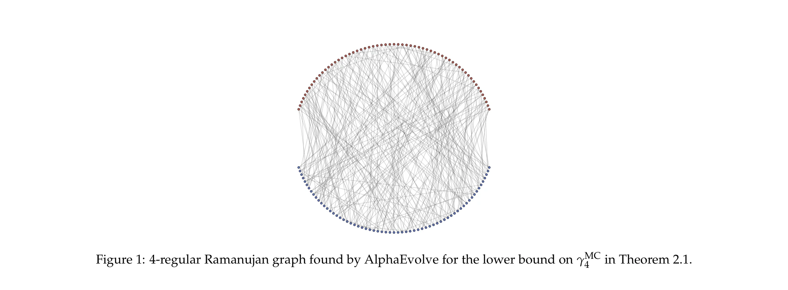
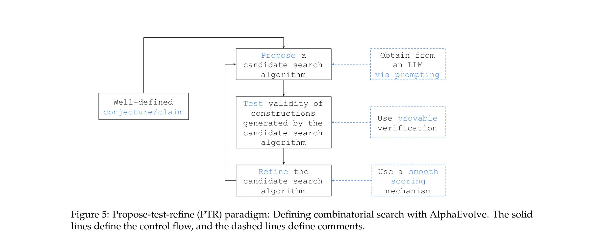

저자: Ansh Nagda, Prabhakar Raghavan, Abhradeep Thakurta | 날짜: 2025 | DOI: 10.48550/ARXIV.2509.18057

Figure 1: 4-regular Ramanujan graph found by AlphaEvolve for the lower bound on γMC
AlphaEvolve라는 LLM 기반 코드 변이 에이전트를 활용하여 MAX-CUT, MAX-k-CUT, 그리고 metric TSP의 근사 경계(approximation hardness) 문제에서 새로운 상한 및 하한을 발견함으로써 복잡도 이론의 진전을 이룸.

Figure 5: Propose-test-refine (PTR) paradigm: Defining combinatorial search with AlphaEvolve. The solid
총평: 이 논문은 LLM 기반 자동 탐색이 복잡도 이론의 구체적인 경계 개선에 성공적으로 적용될 수 있음을 최초로 보임으로써, AI-assisted mathematics의 가능성을 강력히 입증한다. 특히 검증 함수까지 최적화하는 메타 접근법과 modular 논증 개발은 창의적이며, 세 가지 고전 문제에서의 동시적 진전은 방법론의 범용성을 시사한다.